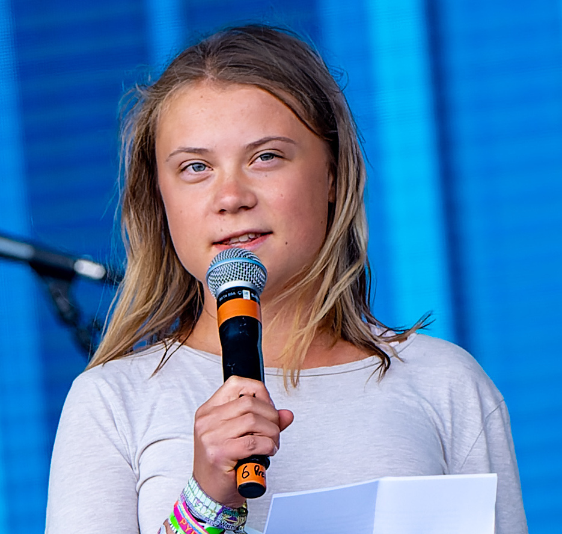

Başlangıç
Temel derslerde sağlam bir altyapı kurarken öğrenme merakını, iletişim becerilerini ve düzenli çalışma alışkanlığını geliştiririz.
Merakla öğren, güvenle geleceğe ilerle
Kuzey Akademi; bilimsel düşünceyi, yaratıcı üretimi ve toplumsal sorumluluğu bir araya getiren öğrenme ortamıyla her öğrencinin kendi potansiyelini keşfetmesine rehberlik eder.
Eğitim programlarımızı keşfedinÖğrenme yolculuğu
Öğrencilerimizin akademik gelişimini aşamalı ve bütüncül bir yaklaşımla destekliyor; her seviyede düşünme, araştırma ve üretme becerilerini güçlendiriyoruz.
Temel derslerde sağlam bir altyapı kurarken öğrenme merakını, iletişim becerilerini ve düzenli çalışma alışkanlığını geliştiririz.
Disiplinler arası çalışmalarla analitik düşünmeyi destekler, öğrencilerin öğrendiklerini gerçek yaşamla ilişkilendirmelerini sağlarız.
Araştırma, proje ve akademik rehberlik çalışmalarıyla öğrencileri yükseköğretime ve yaşam boyu öğrenmeye hazırlarız.
Birlikte öğreniyoruz
Farklı şehirlerdeki kampüslerimiz, güvenli ve kapsayıcı ortamlarıyla öğrencilerin akademik ve sosyal gelişimine alan açar.
Öğrenmeyi destekleyen alanlar
Dersliklerden araştırma alanlarına kadar her birim, öğrencilerin merak ettikleri konuları derinleştirmeleri ve yeni fikirler geliştirmeleri için tasarlandı.
Basılı ve dijital kaynakları, sessiz çalışma alanlarıyla buluşturan kütüphanemiz araştırma ve okuma alışkanlığını destekler.
Öğrencilere bireysel çalışma ve ekip araştırmaları için erişilebilir, kaynak bakımından zengin bir öğrenme ortamı sunar.
Farklı alanlardan kaynakları bir araya getirerek merak edilen soruların izini sürmeye ve bağımsız öğrenmeye alan açar.
Kuzey Akademi'den sesler
Merak etmeye, soru sormaya ve kendi öğrenme yolunu oluşturmaya teşvik edilen öğrencilerimizin deneyimleri.

Proje çalışmalarında kendi fikirlerimi araştırıp sunma fırsatı buldum. Öğretmenlerimin rehberliği, güçlü yanlarımı keşfetmeme yardımcı oldu.
Öğrenci
Farklı derslerde öğrendiklerimizi ortak projelerde kullanmak, konuları daha iyi anlamamı ve ekip içinde sorumluluk almamı sağladı.
Öğrenci
Akademik danışmanlık ve zengin kaynaklar sayesinde hedeflerimi daha bilinçli belirliyor, geleceğe güvenle hazırlanıyorum.
Öğrenci